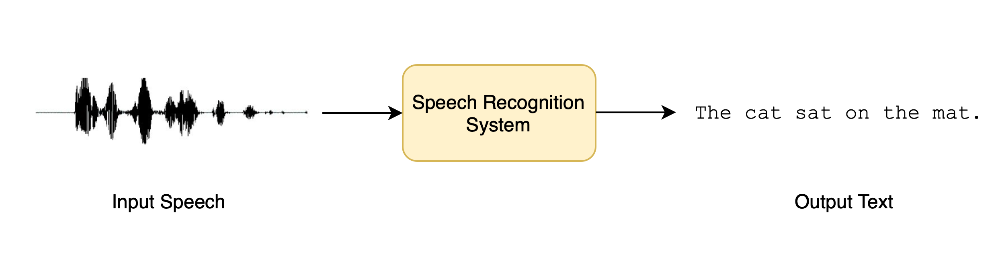

Audio课程（五）- 自动语音识别(ASR)
转载自：https://huggingface.co/learn/audio-course/en/
Audio课程（五）- 自动语音识别(ASR)
在本节中，我们将探讨如何使用 Transformers 将语音转换为文本，这一任务被称为语音识别。

语音识别，也称为自动语音识别（ASR）或语音转文本（STT），是最受欢迎和令人兴奋的语音处理任务之一。 它广泛应用于包括口述、语音助手、视频字幕和会议记录在内的多种应用中。
您可能在不知不觉中多次使用过语音识别系统，比如说您智能手机中的数字助手（Siri、Google Assistant、Alexa）！ 当您使用这些助手时，它们首先要做的就是将您的语音转写为书面文本，准备用于各种下游任务（比如为您查询天气预报 🌤️）。
试试下面的语音识别 demo。您可以使用麦克风录制自己的声音，或拖放音频样本文件进行转写：
语音识别是一项具有挑战性的任务，它需要对音频和文本都有所了解。输入的音频可能有很多背景噪音，并且可能由具有各种口音的说话人发出，这使得从中识别出语音变得困难。 书面文本可能包含无声音的字符，如标点符号，这些信息仅从音频中推断很困难。这些都是我们在构建有效的语音识别系统时必须克服的障碍！
现在我们已经定义了我们的任务，我们可以开始更详细地研究语音识别。通过本单元的学习，您将对各种可用的预训练语音识别模型有一个良好的基本理解，并了解如何通过 🤗 Transformers 库使用它们。 您还将了解对一个领域或某种特定语言微调 ASR 模型的过程，使您能够为遇到的任何任务构建一个高效的系统。您将能够向您的亲朋好友现场演示您的模型，一个能够将任何语音转换为文本的模型！
语音识别的预训练模型
在本节中，我们将介绍如何使用 pipeline() 来使用预训练的语音识别模型。 在第 2 单元中，我们介绍了 pipeline() 这种执行语音识别任务的简便方法， 所有的预处理和后处理都在幕后进行，而且它还可以灵活地快速实验 Hugging Face Hub 上的任何预训练检查点。 在本单元中，我们将更深入地探索语音识别模型的不同属性，以及利用它们来处理不同的任务的方法。
如第 3 单元详细介绍的那样，语音识别模型大致分为两类：
- 连接时序分类（Connectionist Temporal Classification, CTC）：仅编码器（encoder-only）的模型，顶部带有线性分类（CTC）头
- 序列到序列（Sequence-to-sequence, Seq2Seq）：编码器-解码器（encoder-decoder）模型，编码器和解码器之间带有交叉注意力机制
在 2022 年之前，CTC 是这两种架构中更受欢迎的一种，以 encoder-only 模型为主，例如 Wav2Vec2、HuBERT 和 XLSR 在语音的预训练/微调范式中取得了突破。 大公司如 Meta 和 Microsoft 在大量无标签音频数据上对编码器进行了多天甚至数周的预训练。 用户采用一个预训练的检查点，并在少至 10 分钟 的有标注的语音数据上进行微调，就可以在下游语音识别任务中取得强大的性能。
然而，CTC 模型也有其缺点。在编码器上附加一个简单的线性层可以得到一个小巧、快速的完整模型，但可能容易出现语音拼写错误。我们将用 Wav2Vec2 模型演示这一点。
探索 CTC 模型
让我们加载 LibriSpeech ASR 数据集的一小部分，以展示 Wav2Vec2 的语音转写能力：
1 | from datasets import load_dataset |
输出：
1 | Dataset({ |
我们可以选择 73 个音频样本中的一个，检查音频样本及其转写：
1 | from IPython.display import Audio |
输出：
1 | HE TELLS US THAT AT THIS FESTIVE SEASON OF THE YEAR WITH CHRISTMAS AND ROAST BEEF LOOMING BEFORE US SIMILES DRAWN FROM EATING AND ITS RESULTS OCCUR MOST READILY TO THE MIND |
选择了一个数据样本后，我们现在将一个微调过的检查点加载到 pipeline() 中。 为此，我们将使用官方在 100 小时 LibriSpeech 数据上微调的 Wav2Vec2 base 检查点：
1 | from transformers import pipeline |
接下来，我们将从数据集中取一个示例，并将其数据传递给 pipeline。由于 pipeline 会 消耗 我们传入的字典（意味着它无法被多次读取）， 我们将传递数据的副本。这样，我们可以安全地在以下示例中重复使用同一个音频样本：
1 | pipe(sample["audio"].copy()) |
输出：
1 | {"text": "HE TELLS US THAT AT THIS FESTIVE SEASON OF THE YEAR WITH CHRISTMAUS AND ROSE BEEF LOOMING BEFORE US SIMALYIS DRAWN FROM EATING AND ITS RESULTS OCCUR MOST READILY TO THE MIND"} |
我们可以看到 Wav2Vec2 模型在转写这个样本方面做得相当好——乍一看似乎是正确的。我们将目标和预测放在一起，突出两者的区别：
1 | Target: HE TELLS US THAT AT THIS FESTIVE SEASON OF THE YEAR WITH CHRISTMAS AND ROAST BEEF LOOMING BEFORE US SIMILES DRAWN FROM EATING AND ITS RESULTS OCCUR MOST READILY TO THE MIND |
将目标文本与预测出的转写进行比较，我们可以看到所有单词 听起来 都是正确的，但有些拼写不准确。例如：
- CHRISTMAUS vs. CHRISTMAS
- ROSE vs. ROAST
- SIMALYIS vs. SIMILES
这突显出了 CTC 模型的缺点:CTC 模型本质上是一个“仅声学”的模型：它由一个编码器组成，该编码器通过输入的音频计算出隐藏状态，并且由一个线性层将隐藏状态映射到字符：
这意味着该系统几乎完全基于它的声学输入（音频中的语音部分）进行预测，因此倾向于以表音的方式进行转写（例如 CHRISTMAUS）。 它对上下文的语言建模重视程度较低，因此容易出现语音拼写错误。一个更智能的模型应该发现 CHRISTMAUS 不是英语中的有效单词，并在进行预测时将其纠正为 CHRISTMAS。 我们的预测还缺少两个重要特征——大小写和标点符号。这限制了该模型的转写的现实应用。
过渡到 Seq2Seq
Seq2Seq 模型来了！正如第 3 单元所概述的，Seq2Seq 模型由编码器和解码器通过交叉注意力机制相连构成。 编码器的作用与以前相同，负责计算音频输入的隐藏状态表示，而解码器的作用则是 语言模型。 解码器处理编码器计算出的整个隐藏状态表示序列，并生成相应的文本转写。它会通过语言建模，在推理时通过输入音频的全局上下文实时纠正拼写错误，避免语音预测的问题。
Seq2Seq 模型有两个缺点：
- 解码较慢，因为解码过程是逐步进行的，而不是一次性完成的
- 需要更多的训练数据才能收敛
实际上，大量的训练数据一直是语音领域 Seq2Seq 架构进步的瓶颈。带标注的语音数据很难找到，目前最大的带标注的数据集仅有 10,000 小时。 这一切都在 2022 年 Whisper 发布时发生了改变。Whisper 是由 OpenAI 的 Alec Radford 等作者在 2022 年 9 月 发布的用于语音识别的预训练模型。 与之前完全在 无标注 音频数据上预训练的 CTC 前辈不同，Whisper 是在大量 有标注 的音频-转写数据上预训练的，整整有 680,000 小时。
这是比用于训练 Wav2Vec 2.0 的无标签音频数据（60,000 小时）多一个数量级的数据。更重要的是，这些预训练数据中有 117,000 小时是多语言（或“非英语”）数据。 这导致了预训练出的检查点可以应用于 96 种以上语言，其中包括许多 低资源 的语言，即这些语言缺乏适合训练的大型数据集。
当扩展到 680,000 小时有标注的预训练数据时，Whisper 模型显示出强大的泛化能力，适用于许多数据集和领域。 预训练检查点取得了能与最先进的语音识别系统相媲美的结果，在 LibriSpeech 的 test-clean 子集上实现了接近 3% 的词错误率（WER）， 并在 TED-LIUM 上创造了新的最佳记录，WER 为 4.7%（参考 Whisper 论文 中的表 8）。
最重要的是 Whisper 能处理长音频样本、对输入噪声有鲁棒性，且能预测带大小写和标点符号的转写。这使其成为实际应用中可选的语音识别系统之一。
本节的剩余部分将向您展示如何使用 🤗 Transformers 中的预训练 Whisper 模型进行语音识别。 在许多情况下，预训练的 Whisper 检查点表现出色，我们建议在解决任何语音识别问题时第一步先考虑用它。 通过微调，预训练检查点可以针对特定数据集和语言进行调整，以进一步优化效果，我们将在接下来的 微调 小节中演示如何做到这一点。
Whisper 检查点有五种配置，每种配置的模型大小不同。最小的四个分别在仅英语和多语言数据集上训练，而最大的检查点仅有多语言。 一共九个预训练检查点都可以在 Hugging Face Hub 上找到。 以下表格总结了这些检查点，并附有 Hub 上模型的链接。“VRAM”表示以最小批次大小（batch size）为 1 时运行模型所需的 GPU 内存。 “Rel Speed”是与最大型号相比的相对速度。根据这些信息，您可以选择最适合您硬件的检查点。
| 大小 | 参数量 | VRAM / GB | 相对速度 | 仅英语 | 多语言 |
|---|---|---|---|---|---|
| tiny | 39 M | 1.4 | 32 | ✓ | ✓ |
| base | 74 M | 1.5 | 16 | ✓ | ✓ |
| small | 244 M | 2.3 | 6 | ✓ | ✓ |
| mdeium | 769 M | 4.2 | 2 | ✓ | ✓ |
| large | 1550 M | 7.5 | 1 | x | ✓ |
让我们加载 Whisper Base 检查点，它的大小与我们之前使用的 Wav2Vec2 检查点相当。 考虑到我们接下来会做多语言语音识别，我们将加载基础检查点的多语言变体。我们还将模型加载到 GPU（如果有）或 CPU 上，如有必要的话 pipeline() 随后会负责将所有输入/输出从 CPU 移动到 GPU：
1 | import torch |
好！现在让我们像之前一样转写音频。我们唯一改变的是传递一个额外的参数 max_new_tokens，它告诉模型在进行预测时生成的最大词元数：
1 | pipe(sample["audio"], max_new_tokens=256) |
输出：
1 | {'text': ' He tells us that at this festive season of the year, with Christmas and roast beef looming before us, similarly is drawn from eating and its results occur most readily to the mind.'} |
轻松搞定！您首先注意到的是大小写和标点符号，这显然比 Wav2Vec2 不区分大小写也不含标点的转写更易读。让我们对比一下转写与目标输出：
1 | Target: HE TELLS US THAT AT THIS FESTIVE SEASON OF THE YEAR WITH CHRISTMAS AND ROAST BEEF LOOMING BEFORE US SIMILES DRAWN FROM EATING AND ITS RESULTS OCCUR MOST READILY TO THE MIND |
Whisper 很好地纠正了我们在 Wav2Vec2 那里看到的语音错误—— Christmas 和 roast 都拼写正确。我们看到模型在转写 SIMILES 时出了错， 误写为 similarly，但这次预测是英语中的有效单词。使用更大的 Whisper 检查点可以帮助进一步减少转写错误，但代价是需要更多的计算和更长的转写时间。
该模型应当有能力处理 96 种语言，所以现在让我们暂时离开英语语音识别，走向全球 🌎！ Multilingual LibriSpeech (MLS) 数据集是 LibriSpeech 数据集的多语言版本， 包含六种语言的带标注音频数据。我们将从 MLS 数据集的西班牙语子集中加载一个样本，使用 流式（streaming）模式，这样我们就不必下载整个数据集：
1 | dataset = load_dataset( |
我们再次检查文本转写并试听音频片段：
1 | print(sample["text"]) |
输出：
1 | entonces te delelitarás en jehová y yo te haré subir sobre las alturas de la tierra y te daré á comer la heredad de jacob tu padre porque la boca de jehová lo ha hablado |
这是我们希望通过 Whisper 转写出的目标文本，虽然我们现在知道我们预测的结果可能会比这更好，因为我们的模型还会预测标点和大小写，而参考中没有这些。 让我们将音频样本输入 pipeline 以获得文本预测。需要注意的是，pipeline 会 消耗 我们输入的音频输入字典，即字典不能被重复读取。 为了解决这个问题，我们将传递一个音频样本的 副本，这样我们就可以在后续代码示例中重复使用同一个音频样本：
1 | pipe(sample["audio"].copy(), max_new_tokens=256, generate_kwargs={"task": "transcribe"}) |
输出：
1 | {'text': ' Entonces te deleitarás en Jehová y yo te haré subir sobre las alturas de la tierra y te daré a comer la heredad de Jacob tu padre porque la boca de Jehová lo ha hablado.'} |
太好了——这看起来与我们的参考文本非常相似（可以说更好，因为它有标点和大小写！）。您会注意到，我们以 生成关键字参数（generate kwarg）的形式传递了 "task"。 将 "task" 设置为 "transcribe" 会迫使 Whisper 执行 语音识别 任务，即转写的语言就是音频中使用的语音。 Whisper 还能够执行与之密切相关的 语音翻译 任务，西班牙语音频可以被翻译成英语文本。要实现这一点，我们将 "task" 设置为 "translate"：
1 | pipe(sample["audio"], max_new_tokens=256, generate_kwargs={"task": "translate"}) |
输出：
1 | {'text': ' So you will choose in Jehovah and I will raise you on the heights of the earth and I will give you the honor of Jacob to your father because the voice of Jehovah has spoken to you.'} |
现在我们知道可以在语音识别和语音翻译之间切换，我们可以根据需要选择任务。 要么我们从 X 语言的音频识别到同一语言 X 的文本（例如，西班牙语音频到西班牙语文本），要么我们从任何语言 X 的音频翻译到英文文本（例如，西班牙语音频到英文文本）。
要了解更多关于如何使用 "task" 参数来控制生成文本的属性，请参阅 Whisper base 的 模型卡片。
长篇转写和时间戳
到目前为止，我们一直专注于转写不到 30 秒的短音频样本。但我们也提到过 Whisper 的一个优势是可以处理长音频样本，我们将在这里处理这个任务！
让我们通过拼接 MLS 数据集中连续几条样本来创建一个长音频文件。因为 MLS 数据集是通过将长有声读物录音分割成较短片段来整理的， 所以拼接样本是重构较长有声读物段落的一种方法，拼接出的音频在各个样本间应该是连贯的。
我们将目标音频长度设为 5 分钟，并在达到这个值时停止拼接样本：
1 | import numpy as np |
输出：
1 | Length of audio sample is 5.0 minutes 17.22 seconds |
好的！有 5 分钟 17 秒的音频要转写。直接将这个长音频样本输入给模型有两个问题：
- Whisper 被设计用于处理 30 秒的样本：少于 30 秒的任何内容都会用静音填充至 30 秒，超过 30 秒的任何内容都会通过切掉多余音频缩短至 30 秒，所以如果我们直接输入我们的音频，我们只会得到前 30 秒的转写
- Transformer 网络中的内存随序列长度平方增长：输入长度加倍会使内存需求增加四倍，所以传递超长音频文件会导致内存不足（out-of-memory, OOM）错误
在 🤗 Transformers 中进行长篇转写的方式是将输入音频 分块（chunking）为更小、更易管理的段落，每个段落与前一个段落有少量重叠。 这样，我们可以在段落边界处准确地将段落拼接在一起，因为我们可以找到段落之间的重叠并相应地合并转写：

给样本分块的优势在于，转写后续的块i+1i+1 不需要使用之前的块ii 的结果。拼接是在我们已经转写了所有块之后在块边界处进行的，所以转写的顺序并不重要。 该算法完全是 无状态的，所以我们甚至可以同时转写块i+1i+1 和块ii！这允许我们 批量 处理块，并通过并行运行模型，与顺序转写相比大大提升计算速度。 要了解更多关于 🤗 Transformers 中分块的知识，请参阅这篇 博客。
要使用长篇转写，我们在调用 pipeline 时需要添加一个额外参数。这个参数，chunk_length_s，控制分块段落的长度（以秒为单位）。对于 Whisper，30 秒的块是最佳的，因为这符合 Whisper 期望的输入长度。
要使用批处理，我们需要将 batch_size 参数传递给 pipeline。将所有这些放在一起，我们可以像下面这样转写长音频样本，并进行分块和批处理：
1 | pipe( |
输出：
1 | {'text': ' Entonces te deleitarás en Jehová, y yo te haré subir sobre las alturas de la tierra, y te daré a comer la |
由于输出相当长（总共 312 个词），我们在这里不会打印整个输出！在 16GB V100 GPU 上，预计上面的代码要运行 3.45 秒，对于 317 秒的音频样本来说相当不错。在 CPU 上，预期大约要跑 30 秒。
Whisper 还能够预测音频数据的片段级 时间戳。这些时间戳指示音频的短片段的开始和结束时间，对于将转写与输入音频对齐特别有用。 比方说我们想为视频提供字幕（closed caption）——我们需要这些时间戳来知道转写的哪一部分对应于视频的某个段落，以便在那个时间显示正确的转写。
启用时间戳预测很简单，我们只需设置参数 return_timestamps=True。时间戳与我们之前使用的分块和批处理方法兼容，所以我们可以直接将时间戳参数附加到我们之前的代码上：
1 | pipe( |
输出：
1 | [{'timestamp': (0.0, 26.4), |
瞧！我们有了预测的文本以及相应的时间戳。
总结
Whisper 是一个强大的用于语音识别和翻译的预训练模型。与 Wav2Vec2 相比，它具有更高的转写准确性，输出包含标点和大小写。 它可用于转写英语和其他 96 种语言的语音，既能处理短音频片段又能通过 分块 处理的较长片段。这些属性使其可以直接用于许多语音识别和翻译任务，无需微调。 pipeline() 方法提供了一种使用一行 API 调用轻松运行推理的方法，还能对生成的预测进行控制。
尽管 Whisper 模型在许多高资源语言上表现极佳，但它对于低资源语言，即那些缺乏容易获得的训练数据的语言，转写和翻译准确性较低。 在某些语言的不同口音和方言，包括不同性别、种族、年龄或其他人口统计标准的发言者身上的表现也存在差异（参见 Whisper 论文）。
为了提高在低资源语言、口音或方言上的性能，我们可以将预训练的 Whisper 模型在一小部分适当选择的数据上继续训练，这个过程称为 微调。 我们将展示如何仅使用十小时的额外数据，就能将 Whisper 模型在低资源语言上的性能提高 100% 以上。在下一节中，我们将介绍选择微调数据集的过程。